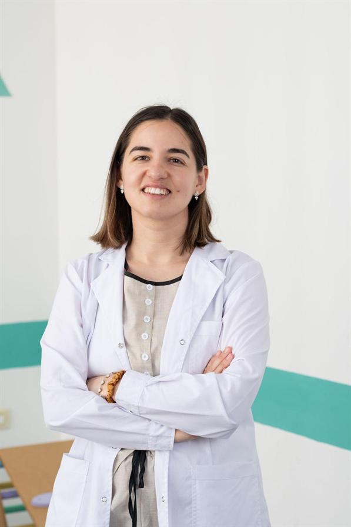
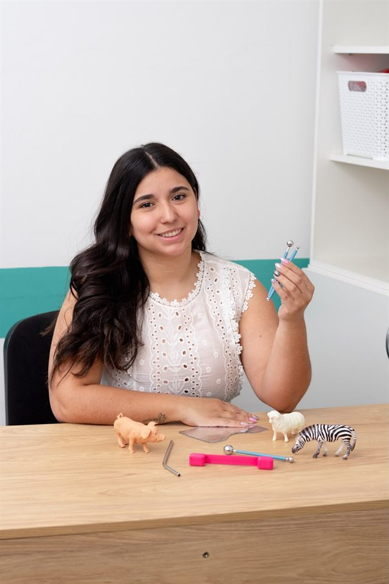

Horarios de atención
Lunes a viernes
9 a 12 h · 16 a 19 h
Pediatría en Santa Rosa
Un espacio dedicado a acompañar la salud y el bienestar de las infancias, con cercanía y cuidado en cada etapa.
Un espacio cálido para acompañar a cada familia.
Lunes a viernes
9 a 12 h · 16 a 19 h
Turnos en el día de lunes a viernes
Atención pediátrica fines de semana y feriados de 9 a 20 h
En Ruca creemos que cada infancia merece ser acompañada con atención, respeto y calidez. Queremos que niñas, niños y sus familias encuentren un lugar donde sentirse a gusto.
Conocé al equipo que cuida de las infancias y sus familias.
Conocé a quienes forman parte del equipo de Ruca.
.jpg)
Pediatra · Alergista

Pediatra · Neonatóloga
Cardióloga infantil
Neumóloga pediatra
Psiquiatra infantil
Psiquiatra infantil

Fonoaudióloga
Psicopedagoga
Administración
Consejos generales para el cuidado y el bienestar de las infancias.
Contenido orientativo: no reemplaza la consulta con el equipo de salud de tu hijo o hija.
La fiebre suele ser una respuesta del organismo. Además de la temperatura, observá cómo se encuentra tu hijo o hija: si puede beber, cómo respira y si responde como de costumbre.
Buscá atención médica urgente si tiene menos de 3 meses y presenta 38 °C o más, o si le cuesta respirar, está muy decaído, no puede despertarse bien, convulsiona o muestra signos de deshidratación. Ante dudas, consultá al equipo de salud; no administres medicamentos sin indicación profesional.
Alrededor de los 6 meses, y cuando el bebé muestra señales de estar preparado, se pueden ofrecer alimentos variados y nutritivos, manteniendo la lactancia materna o fórmula según la indicación de su equipo de salud.
Ofrecé texturas seguras para su etapa, con el bebé sentado y siempre acompañado. Evitá la miel antes del año y los alimentos duros o redondos que puedan provocar atragantamiento. Cada bebé avanza a su ritmo: consultá si tenés dudas sobre cantidades, alimentos o preparación segura.
Mantener horarios y una rutina relajada antes de dormir puede ayudar a que niñas y niños anticipen el momento de descanso. Adaptá las rutinas a la edad y a las necesidades de cada familia.
Para los bebés, la recomendación general de sueño seguro es acostarlos boca arriba, sobre una superficie firme, plana y despejada, en un espacio libre de almohadas, mantas sueltas y juguetes blandos. Consultá al equipo pediátrico para recibir orientación adecuada a tu bebé.
Consultá el Calendario Nacional de Vacunación 2026 publicado por el Ministerio de Salud de la Nación. Las vacunas del calendario oficial son gratuitas y se aplican en centros de salud.
Si alguna dosis está pendiente o no encontrás el carnet, consultá en tu centro de salud: el equipo puede revisar los antecedentes y orientarte para completar el esquema. No hace falta reiniciarlo sin indicación profesional.
Ofrecé líquidos con frecuencia, permití que descanse y mantené los ambientes ventilados. Lavarse las manos y cubrirse al toser ayuda a reducir el contagio.
Consultá si respira con dificultad, no puede beber, orina mucho menos de lo habitual, está muy decaído o empeora. Los antibióticos no tratan los virus y los medicamentos para la tos o el resfrío no deben darse a niños pequeños sin indicación del equipo de salud.
Hablar, jugar, leer y compartir actividades cotidianas favorece oportunidades para explorar y aprender. Las formas y los tiempos del desarrollo pueden variar entre niñas y niños.
Los controles periódicos permiten conversar sobre los avances y las dudas. Si te preocupa algo de su movimiento, comunicación, juego o interacción, comentáselo al equipo de salud: consultar ayuda a encontrar orientación, sin comparar ni etiquetar.
Te esperamos en Santa Rosa, La Pampa.